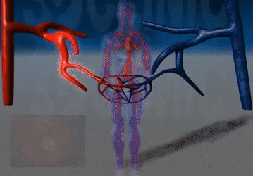

1A - Disease/Disorder Summary
What is it?

Hypertension or high blood pressure is when the blood travels through the brachial artery applying more force on the walls of the altery than healthy. When blood pressure remains high, this damages walls of arteries which can eventually cause death if untreated.
Vasoconstriction is what causes change in our internal body temperature by constriction of vessels which allows excess heat to be removed. Vasoconstriction is normal because it reduces heat loss in cold and stabilizes blood pressure. However, abnormal vasoconstriction can be cause excessive narrowing in the arteries. This is caused by drugs and food such as caffeine and salts. Abnormal vasoconstriction reduces the volume of blood inside the blood vessels which results in a decrease in blood flow. Hence, the force of blood flow is raised, increasing blood pressure in an adequate amount. This untreated high blood pressure also called hypertension leads to serious health conditions.
Normally, when a health care assistant measures blood pressure, they measure the force of the blood on the walls of the brachial artery during ventricular contraction and relaxation. Health care professionals will measure two readings on a sphygmomanometer, the top reading (systolic blood pressure) which represents the pressure of blood during the contraction of the heart and the bottom number which represent the force of the blood in the artery during relaxation of the heart.
What are the major causes of diseases/disorders?
A wide array of factors can cause the blood pressure to incrementally worsen. Existing health conditions are a substantial cause of hypertension - Such conditions such as diabetes increase the possibility of hypertension via damaging arteries which lead to atherosclerosis and thus, lead to hypertension.
Stress is a prevalent risk factor that leads to hypertension - when stress, hormones are secreted which narrow the arteries causing an increase in blood pressure.
Weight contributes to hypertension in which losing 10 pounds can lower your blood pressure! More weight equals more blood needed to supply tissues with nutrients and oxygen, thus the heart contracts harder (systole contraction) which causes more pressure to be exerted against the arterial walls.
Smoking is a significant factor that increases the risk of hypertension - smoking causes vasoconstriction within the arterial walls which cause more pressure to be exerted against the arteries (this can also explain why face complexion is prevalent among smokers). There are many other causes of hypertension as these are just some of the causes.
Are any of these causes preventable?
A healthy diet could greatly reduce the chances of hypertension - especially in reducing the amount of sodium (salt) consumed. Salt has the ability to narrow the blood vessels in which this is a form of vasoconstriction. When the blood vessels narrow, the heart has to work harder to pump the blood and allow the blood to flow. Furthermore, the systole increases which leads to hypertension.
Regular exercise is a contributor to help reduce hypertension. Generally in exercise, our heartbeat is faster; thus, contracts harder - Our heart gradually strengthens with thicker ventricles. With thicker ventricles, the heart can effectively pump out blood which reduces hypertension. In addition, regular exercise can help reduce weight which helps reduce the chance of hypertension. Less weight equals less blood needed to supply tissues with nutrients and oxygen, thus the heart contracts less.
Managing stress such as listening to music or meditating can help reduce hypertension.
What are the main signs/symptoms?
The current main signs/symptoms for Hypertension are severe headaches, nosebleeds, fatigue or confusion, vision problems, chest pain, difficulty breathing, irregular heartbeat, blood in urine, pounding in your chest, neck or ears and High blood pressure. Other symptoms that are related to High blood pressure are sweating, nervousness, dizziness, trouble sleeping, facial flushing and blood spots in eyes.
Are there any cures or treatments?
What is the long-term outlook for someone with this condition?
Hypertension with a rate of 180/120 has a 80% chance of death within a year.
Hypertension is corroborated to have led to disease and stroke - as these are the main causes of death. Some conditions for example, can relate to heart attack, heart failure, etc.
An individual with a kidney disorder may be affected by hypertension because high blood pressure causes arteries to narrow in which less blood is delivered to the kidneys to help filtrate, reabsorb, excrete, etc.
Do they experience significantly lower quality of life due to symptoms?

Generally, people with high blood pressure tend to have been caused by an amount of stress. From a perspective, stress is a factor that leads to lower quality of life because it limits some hierarchies such as the health aspect of life. Generally, some symptoms of hypertension that affect quality of life are: severe headaches, nosebleeds, fatigue or confusion, vision problems, chest pain, difficulty breathing, irregular heartbeat, blood in urine, pounding in your chest, neck or ears and High blood pressure. Other symptoms that are related to High blood pressure are sweating, nervousness, dizziness, trouble sleeping, facial flushing and blood spots in eyes.